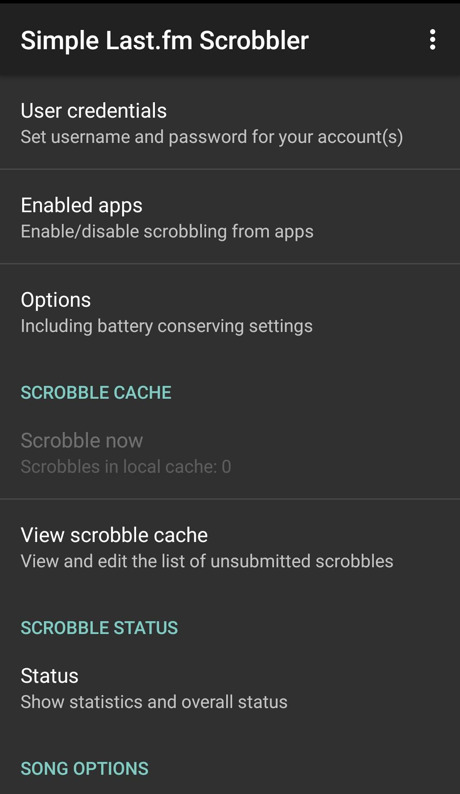
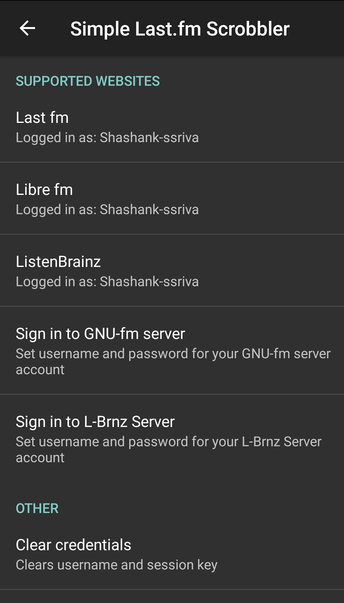
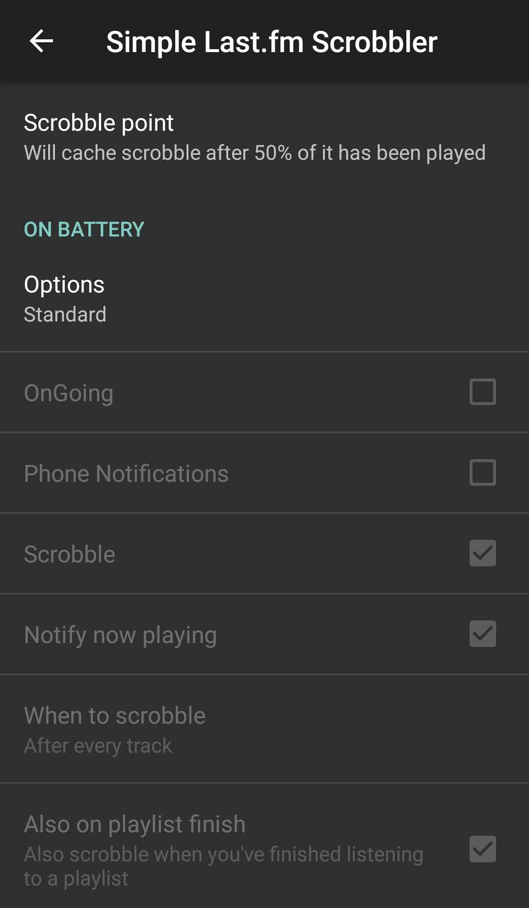
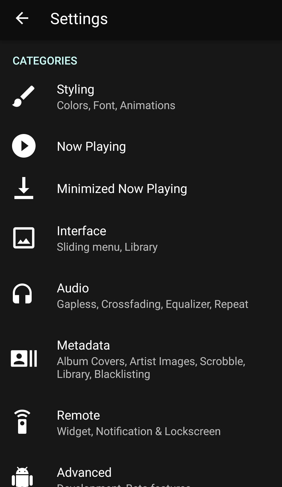
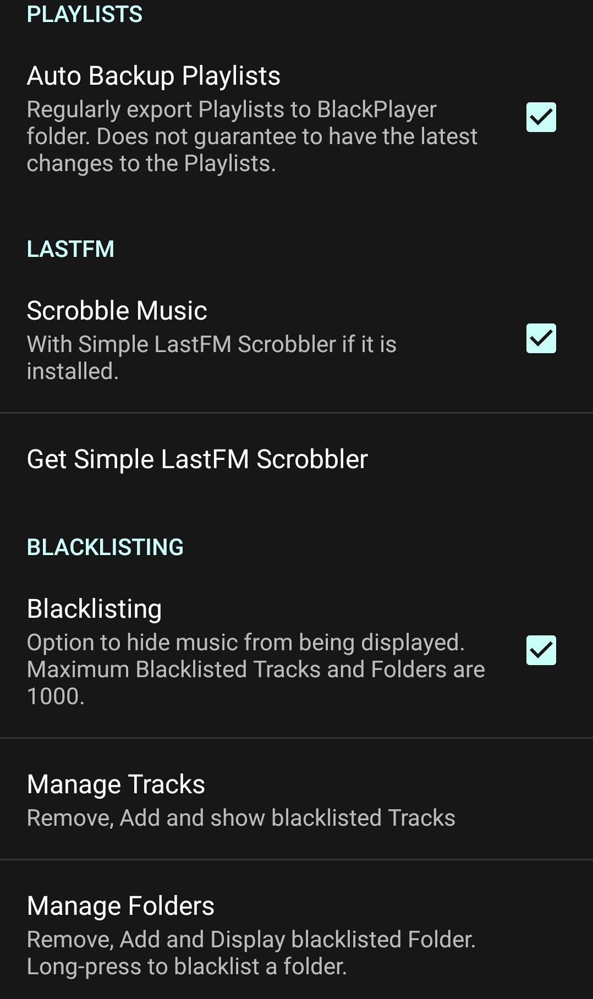
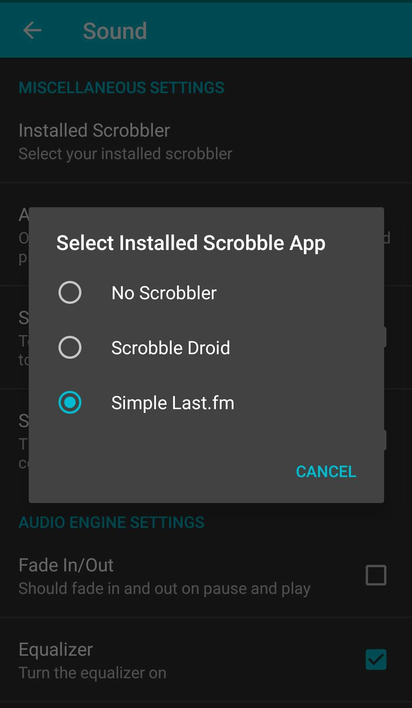

Create a Last.fm account (Skip if you already have a Last.fm account)
Go to Last.fm & fill the details to create your account.
Download Simple Last.fm Scrobbler
Once it is installed, we need to configure it.
Follow below steps to configure Simple Last.fm Scrobbler
Simple Last.fm Scrobbler Configuration
Open Simple Last.fm Scrobbler.

Tap User credentials.

Enter your Last.fm account details.
Configure Playback threshold.
For this, go back to the app's homepage & tap the Options.
Now tap the Scrobble point & adjust the slider accordingly. For most users, 50% is sufficient.

Configure Your Music Player
Simple Last.fm Scrobbler supports all the major music player apps. You can check the list on the Play Store page or their GitHub repository.
Configure Black Player
Go to Black Player's Settings & then tap Metadata.

Check the Scrobble Music box. If it is already selected, keep it checked.

Configure Rocket Player
Go to Rocket Player's Settings & then tap Sound.
Now tap the Simple Last.fm radio button. If it is already selected, keep it checked.
